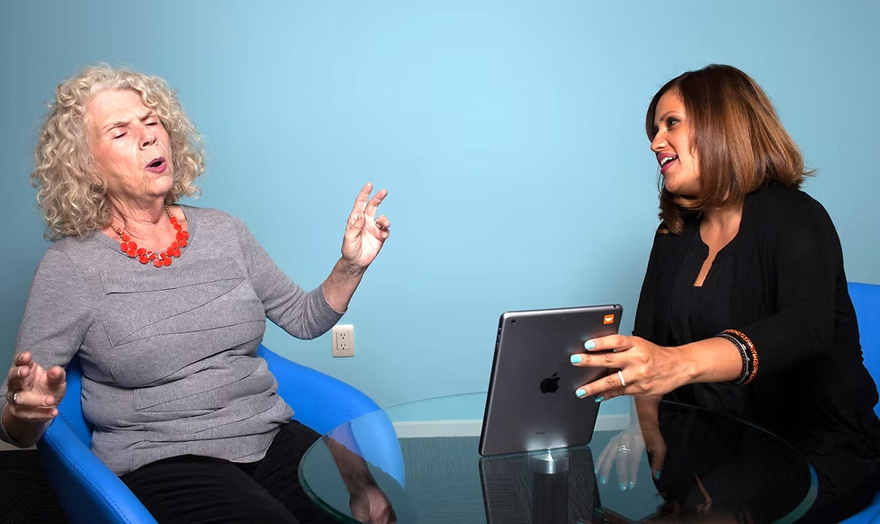
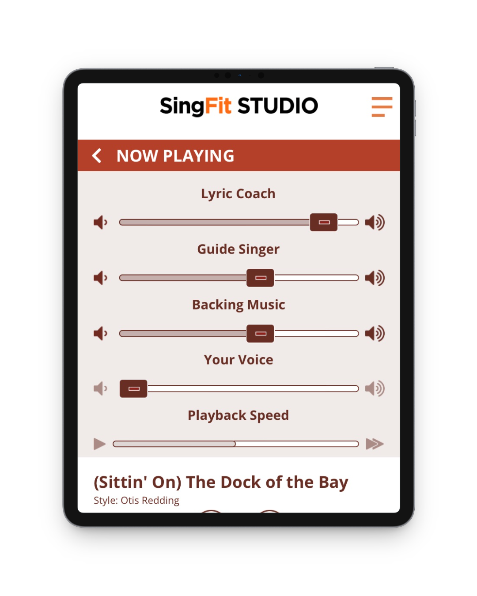
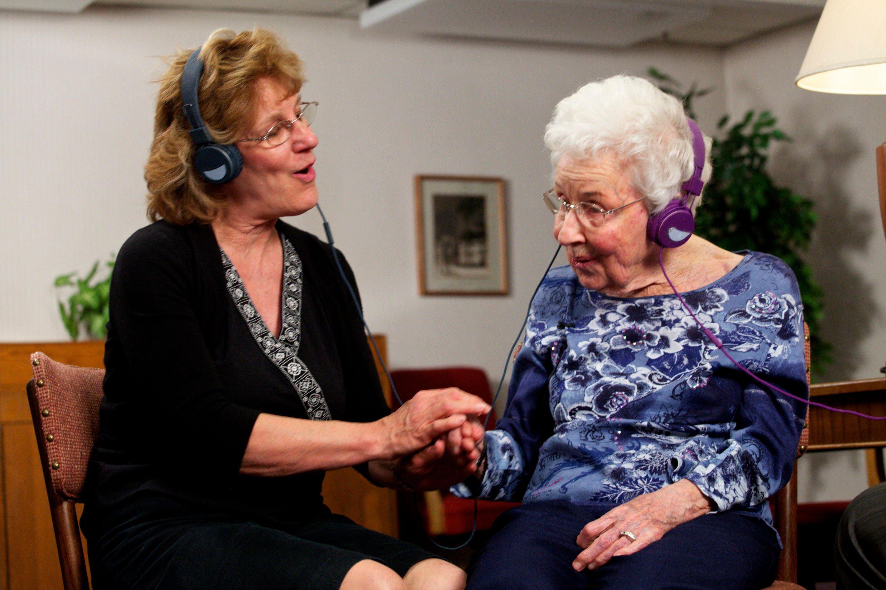
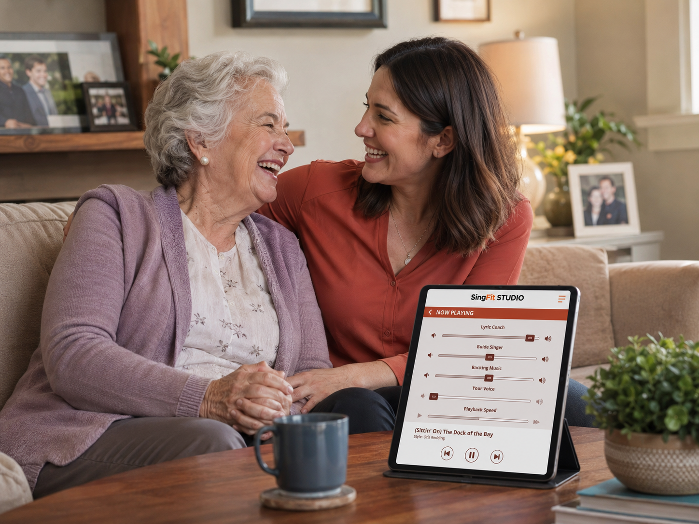
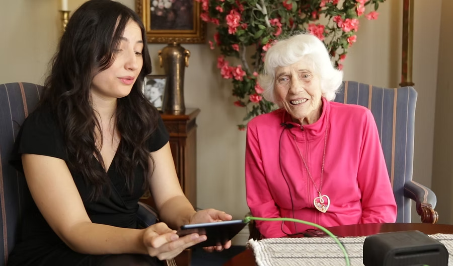

Singing can create a brighter moment
Singing familiar songs together can provide a shared activity during a routine, visit, or difficult moment.
SingFit STUDIO Caregiver helps family caregivers sing familiar songs together with someone living with dementia, memory loss, or cognitive decline using lyric coaching, guide vocals, and built-in prompts.
Free 20-minute conversation about your caregiving routine and how SingFit may fit into it. No obligation.


STUDIO Caregiver is designed for family caregivers supporting an older loved one when conversation or shared activities feel harder than they used to. It gives you a guided way to sing familiar songs together instead of wondering what to do next.

Use familiar songs when words, attention, or conversation feel harder to reach.
Create an active alternative to passive listening, watching TV, or sitting quietly.
Give visits, afternoons, or home-care moments a familiar sing-along you can follow together.
Ask questions and learn whether guided singing sessions fit your family’s routine.
Watch a short walkthrough of SingFit STUDIO Caregiver and see how lyric coaching, guide vocals, and conversation prompts turn familiar songs into something you can do together.
A free product walkthrough to help you understand how guided singing sessions work.
A familiar song can do more than play in the background. Following the lyrics, singing along, and using prompts can turn a quiet moment into a shared activity.

Singing familiar songs together can provide a shared activity during a routine, visit, or difficult moment.

Singing familiar lyrics may encourage recognition, reminiscence, and conversation.

Lyric coaching, guide vocals, and prompts make it easier to start singing together and keep the moment going.
See how lyric coaching, sing-along guidance, and prompts support participation at home.
Caregivers are using SingFit to bring more singing, laughter, and connection into everyday time with someone they love.
Free 20-minute conversation with the SingFit team about your caregiving routine.
No. STUDIO Caregiver is designed for everyday caregivers. The built-in lyric prompter and guided session structure help you sing along without needing to read, remember lyrics, or perform.
Family caregivers supporting an older loved one, including people experiencing dementia, cognitive decline, or related health challenges.
You’ll have a complimentary 20-minute conversation with the SingFit team to ask questions, see how guided singing sessions work, and learn whether STUDIO Caregiver fits your routine.
Yes. We can help caregivers understand the app and feel confident using guided sing-along features at home.
Every family is different. Schedule a free walkthrough to see how STUDIO Caregiver works, ask questions, and explore whether it’s a good fit for the person you care for.
No obligation. Just a chance to see whether SingFit is right for your family.